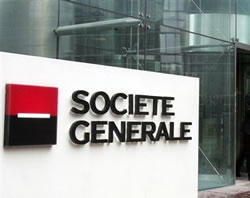

Please contact techsupport@regis.edu if you need assistance or to report any problems.
Please contact techsupport@regis.edu if you need assistance or to report any problems.
© 2010 Regis University. All rights reserved.

In January 2008, Société Générale (SocGen), France’s second-largest banking establishment, was a victim of internal fraud carried out by an employee, Jérôme Kerviel. SocGen bank lost €4.9 billion as an immediate result of the fraud. (At the time of the incident, the euro was worth approximately $1.45.)
In 2007, SocGen was rated the best equity derivatives operation in the world by Risk magazine. Its internal control system of checks and balances was world renowned. For example, SocGen’s trading room had five levels of hierarchy, each of which had a clear set of trading limits and controls checked daily by a small army of compliance officers. In addition, “the bank also [had] a shock team of internal auditors who descend on a corner of the bank without warning and pull apart its operations to ensure they conform to bank rules.”
During the summer of 2000, Kerviel began his employment at the bank – ironically, in its Compliance Department. Five years later, he was promoted to a junior trader in the arbitrage desk, which deals in program trading, exchange-traded funds, swaps, stock index futures trading, and quantitative trading. Kerviel was responsible for generating profits for the bank and its customers by betting on the market’s future performance. His first major win came when he shorted stock of German insurer Allianz and earned the bank €55,000.
Thanks to his years of experience in the Compliance Department, Kerviel was an expert in the proprietary information system SocGen used to book trades. He knew that while the Risk Control Department monitored the bank’s overall positions very closely, it did not verify the data that individual traders entered into the system. Kerviel also knew the timing of the nightly reconciliation of the day’s trades, so he was able to delete and then reenter unauthorized transactions without getting caught.
On November 7, 2007, SocGen received an email alert from a surveillance officer at Eurex (one of Europe’s largest exchanges). The message stated that Kerviel had engaged in several transactions that had set off alarms at the exchange over the past seven months. A SocGen risk-control expert responded two weeks later indicating that there was nothing irregular about the transactions. A week later, Eurex sent a second e-mail alert, stating that they were not satisfied with SocGen’s explanation and demanding more details. Following another two-week delay, SocGen provided further details, and both Eurex and SocGen let the matter drop. The SocGen risk-control expert used information provided by Kerviel and his supervisor as well as a compliance officer at a SocGen subsidiary as the basis of both of his replies to Eurex. Kerviel’s supervisor stated that there was no anomaly whatsoever.
Following the Eurex warnings, Kerviel took additional steps to cover his tracks by manipulating portions of the internal risk-control system with which he was unfamiliar. This ultimately led to the discovery of his alleged fraud. On January 18, 2008, Kerviel executed a set of trades that set off another alarm. This time, upon a more thorough investigation, a major problem became apparent. As SocGen risk-control experts carefully reviewed Kerviel’s latest transactions, they were shocked to discover that the trades had resulted in a market exposure for the firm of €50 billion (obviously far beyond Kerviel’s trading limit), which, when finally cleared, resulted in a loss of more than €4.9 billion.
As of this writing, Kerviel is still under investigation and involved in litigation charging him with using his insider knowledge to falsify records and commit computer fraud. Prosecutors suspect his motivation was to boost his income by making successful trades far beyond his trading limits, thus earning large bonuses (his total salary and bonus for 2007 was a relatively modest €94,000). Kerviel spent five weeks in jail but is currently free on bond. He was hired in February 2008 as a computer consultant by the French firm Lemaire Consultants & Associates; however, he is said to be “traumatized” by his newfound infamy.
Kerviel admits he took trading positions beyond his authorized limit to make transactions involving European index futures. Kerviel told prosecutors, “the techniques I used aren’t at all sophisticated and any control that’s properly carried out should have caught it.” He insists that he did no wrong and that the bank was fully aware of his transactions. Kerviel says that he refuses to be made a scapegoat for the bank’s lapses in oversight. He argues that his superiors tacitly approved his activities – as long as they were generating a profit. Kerviel had earned a profit for the bank of nearly €1.5 billion in 2007 by exceeding his trade limit and executing similar, but successful, trades. Meanwhile, the bank says that the fraud was based on simple transactions but was concealed by “sophisticated and varied techniques.” If convicted, Kerviel faces up to five years in jail and fines totaling as much as €300,000.
The sterling reputation of SocGen was badly tarnished, and the market value of the firm dropped 50% over the course of just a few months. The bank’s highly respected CEO and chairman of the board, Daniel Bouton, was put under enormous pressure to step down; this included requests for his resignation from French president Nicholas Sarkozy. Bouton eventually resigned as CEO in May 2008, but he remains chairman of the board. In December 2008, European hedge fund GLG Partners entered into an agreement to acquire the bank in the second half of 2009.
Several internal and external investigations of the bank’s operating procedures and internal controls have been completed. The French banking regulator stated that there were “grave deficiencies” in the bank’s internal controls and fined it €4 million. The Banking Commission said that SocGen did not focus sufficiently on fraud weaknesses and that there were “significant weaknesses” in the bank’s IT security systems. Another report pointed out that Kerviel’s direct supervisor was inexperienced and received insufficient support to do his job properly. It also stated that Kerviel’s fraudulent transactions were entered by an unnamed assistant trader, thus raising the issue of collusion and indicating even more widespread weaknesses in internal controls.
Pascal Decque, a financial analyst who covers SocGen for Natixis (a leading player in corporate and investment banking), commented, “SocGen was brilliant in [its] achievement, . . . the world leader in derivatives. Maybe when you are that good, you think you will never fail.”
Reference: Reynolds, G. (2010). Ethics in Information Technology (3rd ed.). Boston, MA. Cengage.
 Please contact techsupport@regis.edu if you need assistance or to report any problems.
Please contact techsupport@regis.edu if you need assistance or to report any problems.
© 2010 Regis University. All rights reserved.